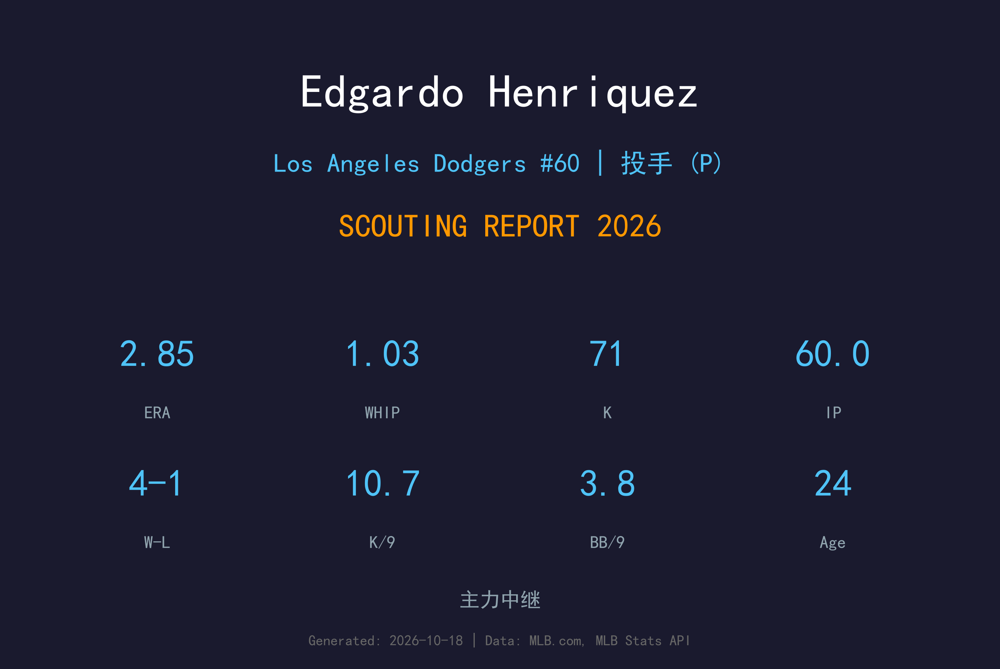
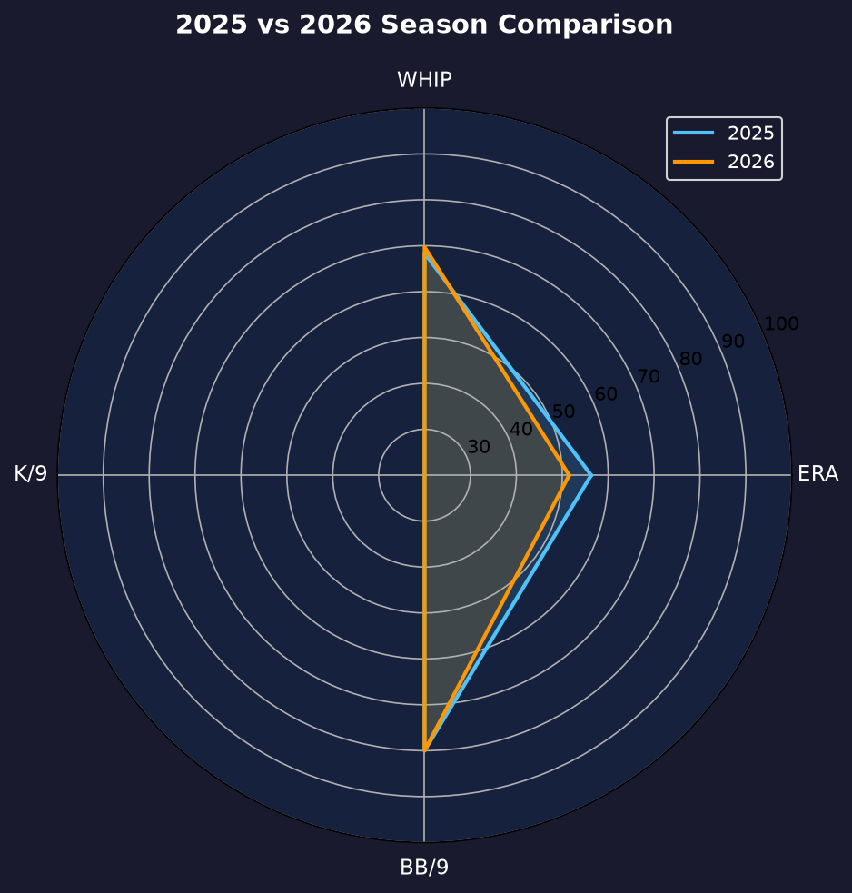
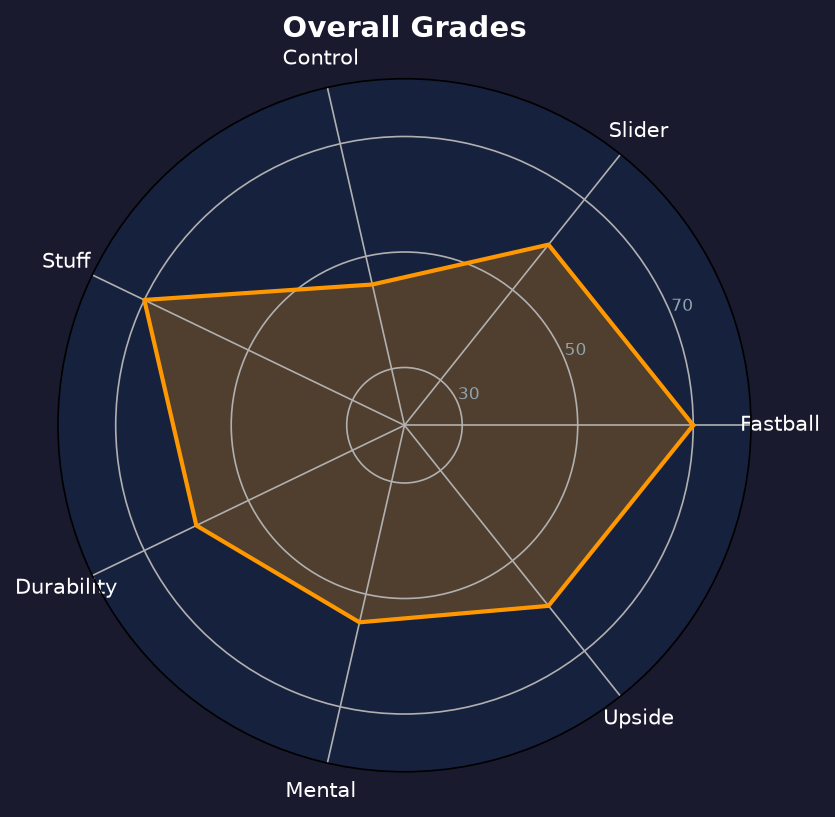

Los Angeles Dodgers #63 | 右投后援 | 右投 / 右打 | 百火少年

Edgardo Henriquez 是道奇牛棚最年轻的火球男，以动辄100mph的速球与锐利滑球组成的暴力两球种崛起，是球队近年国际签账最亮眼的收获之一。
2026年他出赛61场（含1场先发），缴出4胜1败、2.85 ERA、1.03 WHIP，60局71次三振（10.65 K/9）。最令人惊艳的是整季仅被轰1支全垒打，HR/9 0.15 是全队投手最佳，11次 hold 也显示教练团对他的信任与日俱增。
22岁的 Henriquez 还有巨大的成长空间。他的速球速度已经是联盟顶级，接下来要补的是控球稳定性（3.75 BB/9）与季后赛经验——NLCS 的3.2局失3分是他成长路上交的第一笔学费。
以20岁之龄直升道奇牛棚，速球均速99+ mph 立刻引起全联盟注意。
61场出赛、2.85 ERA、整季仅1轰，成为道奇中段牛棚最可靠的火球出口。

| 赛季 | G | W-L | ERA | IP | SO | BB | WHIP | SV |
|---|---|---|---|---|---|---|---|---|
| 2025 | 22 | 2-1 | 2.37 | 19.0 | 18 | 5 | 1.16 | 1 |
| 2026 | 61 | 4-1 | 2.85 | 60.0 | 71 | 25 | 1.03 | 2 |
出赛场次从22场跃升至61场，ERA 微升但 WHIP 从1.16降至1.03，工作量暴增下效率反而进步。
常用武器，占全部配球的 34.4%，均速 100.7 mph。直上直下的四缝线速球，负责抢好球数与建立球数领先，是所有配球的基准。
常用武器，占全部配球的 24.9%，均速 100.9 mph。伸卡球下沉明显，主要用于制造滚地球、压低长打率。
常用武器，占全部配球的 21.9%，均速 87.4 mph。传统滑球横向位移锐利，是两好球后的主要挥空武器。
辅助配球，占全部配球的 14.6%，均速 94.7 mph。卡特球介于速球与滑球之间，球尾小幅横移，用于破坏打者节奏与制造软弱击球。
偶尔使用，占全部配球的 4.2%，均速 82.1 mph。曲球落差大，用于改变打者视线高度与击球节奏。
10.65 K/9 的本科生水准，配上整季仅1支被全垒打的离谱数据，Henriquez 的 stuff 已经是联盟前列。被打击率.176（37安打/60局）说明打者连碰到他的球都困难。
3.75 BB/9 是他下一阶段的必修课。速球太快的副作用是打者不敢咬，他有时会利用这点主动丢坏球，但面对耐心好的打者会陷入球数劣势。若能把 BB/9 压到3.0以下，他有成为终结者的全部条件。
从22场的小样本工具人到61场的牛棚主力，Henriquez 只用了一年。4胜1败、11次 hold，他已经是 Roberts 在第六、七局最信任的右手选项。季后赛的挫折是成长的必经过程，他的天赋天花板远在当前表现之上。

百火少年，控球磨出来后就是终结者胚子
B+ 级 / 高天花板牛棚
道奇 2026 季后赛战绩：NLDS 3-1 晋级、NLCS 0-4 止步。
| G | IP | ERA | WHIP | SO | BB | H | HR |
|---|---|---|---|---|---|---|---|
| 3 | 3.2 | 7.36 | 1.91 | 2 | 1 | 6 | 0 |
Edgardo Henriquez 的2027赛季将是"破茧"之年。道奇可能会给他更多第八局甚至终结者机会，测试他在高 leverage 的成色。控球与第三球种是他通往 elite closer 的两大门槛。
2026：61场、2.85 ERA、11HLD——从小样本工具人到牛棚主力
2027：目标 BB/9 ≤3.0、挑战 15+ hold 或首次救援机会
2028+：若控球成熟，有望接班成为道奇终结者
Edgardo Henriquez 出生于委内瑞拉，是道奇国际签账体系近年签下的最具天赋的投手之一。他以惊人的速球天赋闻名，未成年时球速就已突破三位数。
2024年，年仅20岁的他被道奇直接拉上大联盟，成为球队史上最具冲击力的年轻牛棚火球男之一。在道奇投手开发体系的打磨下，他的滑球与控球逐年进步。
场外的 Henriquez 性格安静，与场上投球的凶猛形成鲜明对比。他是道奇拉丁美洲青训营的骄傲，也是委内瑞拉新生代投手的代表人物。